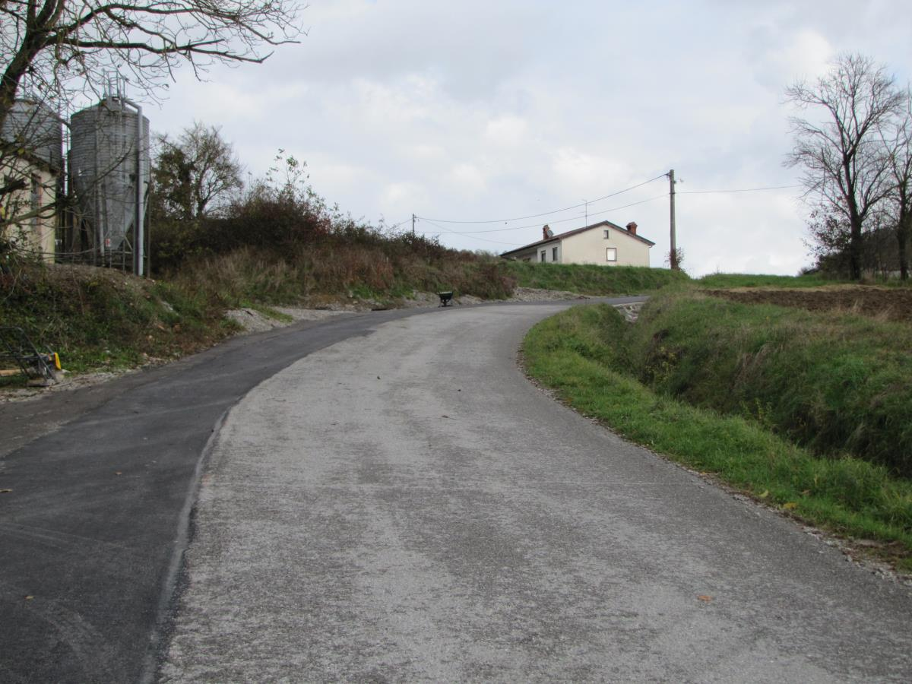

Welcome to Popravilo vodovoda
Manjša vodovodna dela, popravila, Maribor :: MojMojster.net
2020.09.07 05:54moj mojster
moj mojster
BY DAIBAU
O nas Kako deluje Prednosti Pogosta vprašanja Za izvajalce Prijava AKTUALNA DELA OGLASI ZA DELOVNA MESTA STROKOVNA IZOBRAŽEVANJA ｜ KAKO DELUJE? REGISTRIRAJ PODJETJE PREDNOSTI KAKO DELUJE? POGOSTA VPRAŠANJA O NAS DOBRODELNOST Košarica je prazna
arhitektura gradnja streha okna,vrata inštalacije Centralni sesalni sistem Dimniki Dvigala Elektroinštalacije, Električar IR paneli Kamini Klimatske naprave Meritve elektroinstalacij Ogrevanje Plinske napeljave Prezračevanje Solarni sistemi Toplotna črpalka Vodovodar Manjša vodovodna dela, popravila fasade,pleskanje ometi,estrihi talne obloge obdelava kovin pohištvo okolica vzdrževanje drugo
Regije
Gorenjska Goriška Jugovzhodna Slovenija Koroška Notranjsko-kraška Obalno-kraška Osrednjeslovenska Podravska
Apače
Benedikt
Bistrica ob Dravi
Bogojna
Bresternica
Ceršak
Cirkovce
Cirkulane
Destrnik
Dornava
Fala
Fram
Goriščnica
Gorišnica
Gornja Radgona
Hajdina
Hoče
Hoče-Slivnica
Ivanjkovci
Jakobski Dol
jarenina
Jurovski Dol
Juršinci
Kamnica
Kidričevo
Križevci Pri Ljutomeru
Laporje
Lenart v Slovenskih Goricah
Limbuš
Lovrenc Na Dravskem Polju
Lovrenc Na Pohorju
Majšperk
Makole
Malečnik
Maribor
Marjeta na Dravskem polju
Markovci
Martjanci
Miklavž Na Dravskem Polju
Oplotnica
Orehova vas
Ormož
Pernica
Pesnica Pri Mariboru
Podgorci
Podlehnik
Pohorje
Polenšak
Poljčane
Pragersko
Ptuj
Ptujska Gora
Rače
Razkrižje
Rogašovci
Ruše
Selnica ob Dravi
Šentilj v Slovenskih goricah
Sladki Vrh
Slovenska Bistrica
Šmartno na Pohorju
Spodnji Duplek
Središče ob Dravi
Starše
Stoperce
Sv. Trojica V Slovenskih Goricah
Sveta Ana v Slovenskih Goricah
Sveti Tomaž
Trnovska Vas
Vitomarci
Voličina
Zavrč
Žetale
Zgornja Korena
Zgornja Kungota
Zgornja Ložnica
Zgornja Polskava
Zgornja Velka
Zgornji Leskovec
Pomurska Savinjska Spodnjeposavska Zasavska Inštalacije Manjša vodovodna dela, popravila MariborMANJŠA VODOVODNA DELA, POPRAVILA, MARIBOR
Iščem dobrega vodovodarja za servis : Zbrali in preverili smo vodovodarje za manjša popravila , ki delajo v kraju Maribor in okolici. Pošljite povpraševanje in zainteresirani vodovodarji za manjša dela in popravila vas bodo kontaktirali za ogled, predračun in ponudbe. Izkušen vodovodar za manjša popravila v Mariboru , ki lahko izvede: menjava pipe , montaža WC , priklop pralnega stroja , priklop grelnika za vodo , priključitev pomivalnega stroja , čiščenje odtočnih cevi , menjava radiatorjev , popravilo vodovodnih cevi , dober vodoinštalater , ali drugo se bo zagotovo našel tudi za vas. več
Menjava pipe20.00 do 30.00 EUR/kos Montaža bojlerja
50.00 do 100.00 EUR/kos Montaža sifona
15.00 do 30.00 EUR/kos Montaža umivalnika
35.00 do 60.00 EUR/kos Montaža ventila
18.00 do 23.00 EUR/kos Montaža WC kotlička
40.00 do 60.00 EUR/kos Priklop pomivalnega stroja
20.00 do 50.00 EUR/kos Priklop pralnega stroja
25.00 do 40.00 EUR/kos Prikazanih je samo do 40% podjetij, za hiter kontakt in razpoložljivost vseh zainteresiranih pošljite povpraševanje!
15 NAJBOLJŠIH REZULTATOV ZA VODOVODARJI ZA MANJŠA DELA IN POPRAVILA V MARIBORU
Z MONT, Zlatko Krajnc s.p., Hoče
OCENA: 9.5
Ukvarjamo se s kompletnimi strojnimi inštalacijami za stanovanjske objekte. Na nepremičnini uredimo notranji vodovod, poskrbimo za talno gretje, priklopimo toplotno črpalko za sanitarno vodo in toplot...
✓ POPRAVILA 5.9 KM 1 VELIKOST EKIPE 14 IN VEČ LET IZKUŠENJ1 PRIPOROČIL STRANK
Pokliči Želim kontakt, ponuboVodovodne inštalacije, Senad Bostan s.p., Maribor
OCENA: 9.2
Vodovodne inštalacije, Senad Bostan s.p. je podjetje, ki je specialitirano za izvedbo kompletnih strojnih inštalacij. Poleg vodovoda vam nudijo tudi inštalacije plinskih napeljav in napeljav centralne...
✓ MANJŠA VODOVODNA DELA V MARIBORU 2 VELIKOST EKIPE 7 IN VEČ LET IZKUŠENJ2 PRIPOROČIL STRANK
Pokliči Želim kontakt, ponuboAquapower, gradbeništvo, storitve in trgovina d.o.o., Maribor
OCENA: 8.9
Aquapower, gradbeništvo, storitve in trgovina d.o.o. se ukvarja z visokotlačnim čiščenjem odtočnih in drugih cevi, tako v industriji, kot tudi pri manjših objektih. Poleg tega nudijo strankam tudi čiš...
✓ POPRAVILA V MARIBORU 1 VELIKOST EKIPE 13 IN VEČ LET IZKUŠENJ1 PRIPOROČIL STRANK
Pokliči Želim kontakt, ponuboProen d.o.o., Maribor
OCENA: 8.1
NUDIMO VAM CELOVITE ENERGETSKE REŠITVE, USTVARJAMO PRIHRANKE IN ZAGOTAVLJAMO UDOBJE BIVANJA NA KVALITETEN, STROKOVEN IN VAREN NAČIN S CELOVITIMI REŠITVAMI - ŽE 10 LET!STROJNE INŠTALACIJE:● PREZRAČEVAN...
✓ MANJŠA VODOVODNA DELA V MARIBORU 18 VELIKOST EKIPE 10 IN VEČ LET IZKUŠENJ Pokliči Želim kontakt, ponuboVi-Mi, vodovodne inštalacije, Vidovič Milko, s.p., Maribor
OCENA: 7.5
Vi-Mi, vodovodne inštalacije, Vidovič Milko, s.p. vam nudi storitve na področju kompletnih strojnih instalacij v stanovanjskih objektih. Izkušeni mojstri izvedejo instalacije notranjega vodovoda, inst...
✓ MANJŠA VODOVODNA DELA V MARIBORU 1 VELIKOST EKIPE 12 IN VEČ LET IZKUŠENJ Pokliči Želim kontakt, ponuboStrojmont-Strojne instalacije Božidar Šavli s.p., Maribor
OCENA: 7.5
Če iščete hitro, ugodno in hkrati kvalitetno izvedbo kompletnih strojnih instalacij, ste na pravem mestu. Podjetje Strojmont-strojne instalacije Božidar Šavli s.p. je na trgu prisotno že več kot petna...
✓ POPRAVILA V MARIBORU 1 VELIKOST EKIPE 19 IN VEČ LET TRADICIJE Pokliči Želim kontakt, ponuboMIKA-MONT, Miroslav Kasalo, s.p., Maribor
V podjetju se ukvarjamo s izvajanjem strojnih inštalacij, toplotnih črpalk, vodovoda, solarnih kolektorjev, čistilnih naprav, črpališč. Za vas adaptiramo kopalnico in poskrbimo za vsa zaključna gradbe...
✓ MANJŠA VODOVODNA DELA 6.6 KM 1 VELIKOST EKIPE Pokliči Želim kontakt, ponuboFM, VZDRŽEVANJE OBJEKTOV IN OKOLICE, FRANC DANKO, S.P., Maribor
Za vas opravim najrazličnejša hitra porpavila. Tako da če je potrebno kaj postoriti doma, se priporočam....
✓ POPRAVILA V MARIBORU 1 VELIKOST EKIPE2 PRIPOROČIL STRANK
Pokliči Želim kontakt, ponuboMARJAN PETER AUGUŠTIN, s.p., Maribor
Ukvarjamo se s servisom, vzdrževanjem in montažo sanitarne in kopalniške opreme, vključno z vodovodnimi instalacijami....
✓ MANJŠA VODOVODNA DELA V MARIBORU 1 VELIKOST EKIPE Pokliči Želim kontakt, ponuboNAJBOLJE OCENJENI VODOVODARJI ZA MANJŠA DELA IN POPRAVILA V VAŠI OKOLICI:
Miki-trade d.o.o., Gornja Radgona
OCENA: 10
...
✓ POPRAVILA 21.7 KM 2 VELIKOST EKIPE 28 IN VEČ LET TRADICIJE5 PRIPOROČIL STRANK
Pokliči Želim kontakt, ponuboElektroterm d.o.o., Ruše
OCENA: 10
Ukvarjamo se z ogrevanjem, priklopom ogrevalnih naprav, montažo vremensko vodenih regulatorjev, električnimi inštalacijami, strojnimi inštalacijami, vodovodnimi napeljavami, s splošnimi gradbenimi del...
✓ POPRAVILA 10.2 KM 1 VELIKOST EKIPE 7 IN VEČ LET IZKUŠENJ4 PRIPOROČIL STRANK
Pokliči Želim kontakt, ponuboStrojne inštalacije Darko Kocuvan s.p., Sv. Jurij ob Ščavnici
OCENA: 9.8
Ukvarjamo se s strojnimi instalacijami, kamor spadajo instalacije notranjega vodovoda, polaganje in napeljava talnega gretja, instalacije stenskega gretja, priklopi toplotnih črpalk za sanitarno vodo ...
✓ MANJŠA VODOVODNA DELA 29 KM OD KRAJA 2 VELIKOST EKIPE 23 IN VEČ LET TRADICIJE2 PRIPOROČIL STRANK
Pokliči Želim kontakt, ponuboMontaža in vzdrževanje energetskih naprav, Danilo Ditmajer s.p., Ruše
OCENA: 8.7
Smo pecialisti za bazensko tehniko s katero se ukvarjamo preko 25 let. Izvajamo montažo in vdrževanje na energetskih napravah že preko 15 let.Izvajamo dela na plinovodu, ogrevanju, klimatskih napravah...
✓ POPRAVILA 12.5 KM 1 VELIKOST EKIPE 23 IN VEČ LET TRADICIJE1 PRIPOROČIL STRANK
Pokliči Želim kontakt, ponuboLETRAL proizvodna, storitvena in trgovska družba d.o.o., Slovenska Bistrica
OCENA: 8.2
Podjetje Letral d.o.o., smo majhno družinsko podjetje in pokrivamo območje prodaje vse od Maribora do Celja. Naša glavna dejavnost je trgovina z materialom za vodovod in centralno ogrevanje, ter mont...
✓ POPRAVILA 18.9 KM 1 VELIKOST EKIPE1 PRIPOROČIL STRANK
Pokliči Želim kontakt, ponuboINSTALACIJE ANTON SLANIČ S.P., Voličina
OCENA: 7.7
Ukvarjamo se z izvedbo strojnih inštalacij in vsemi pripadajočimi deli kot so montaža vodovodnih napeljav, adaptacija inštalacij, servis vodovodnih napeljav, montaža talnega ogrevanja, plinskih napel...
✓ MANJŠA VODOVODNA DELA 14.2 KM 1 VELIKOST EKIPE 19 IN VEČ LET TRADICIJE Pokliči Želim kontakt, ponubo 1 2 3 >Zadnja objavljena povpraševanja v kategoriji MANJŠA VODOVODNA DELA, POPRAVILA, MARIBOR
Montaža tuš kabine, Maribor
Pozdravljeni, potrebujem izvajalca, ki bi mi bil pripravljen montirati novo tuš kabino in popraviti podometni kotrliček - le-ta pušča. Lp
Andrej B.
Menjava WC školjke, Maribor
Pozdravljeni, potrebujem demontažo stare in montažo nove WC školjke. LP
Polonca N.
Montaža bojlerja, Maribor
Pozdravljeni, potrebna je zamenjava bojlerja. Prosim za vašo ceno in termin. LP
Vesna K.
Menjava umivalnika z novim, Maribor
Pozdravljeni, potrebna je menjava starega umivalnika z novim večjim. LP
Blaž V.
Odrez cevi in zaprtje, Maribor
Pozdravljeni, potrebujem odrez cevi na zunanji strani ometa in zaprtje, izvedel sem, da je bil na koncu vcasih tuš, tako da glavna cev ni. LP
Matic K.
POGLEJ VEČ
VSI IZVAJALCI V KRAJU MARIBOR
arhitektura, projektiranje, Maribor
3d vizualizacija, renderji Maribor Arhitekti, arhitektura Maribor Cenitev nepremičnin Maribor Geodetske storitve Maribor Krajinski arhitekt Maribor Notranje oblikovanje Maribor Projektiranje, projektant Maribor Vodja gradnje, vodja gradbišča Mariborgradbena dela konstrukcije, Maribor
Betonarna Maribor Gradbena dela Maribor Gradbeni material Maribor Novogradnja Maribor Obnove in sanacije Maribor Specializirana gradbena dela Maribor Tesarsko-opažerska dela Maribortesarstvo krovstvo kleparstvo, Maribor
Klepar, Kleparstvo Maribor Krovec, Krovstvo Maribor Leseni nadstreški Maribor Ravne strehe Maribor Strešna okna Maribor Tesarstvo Mariborokna vrata steklarstvo, Maribor
Garažna vrata Maribor Montaža oken Maribor Montaža vrat Maribor Notranja senčila Maribor Notranja vrata Maribor Obnova starih oken Maribor Okna Maribor Popravilo oken, vrat Maribor Popravilo rolet, žaluzij Maribor Pripravljalna dela Maribor Protivlomna vrata Maribor Rastlinjaki Maribor Steklarstvo Maribor Steklene fasade Maribor Vhodna vrata Maribor Zimski vrtovi Maribor Zunanja senčila Mariborelektrične, strojne inštalacije, ogrevanje, vodovod, Maribor
Centralni sesalni sistem Maribor Dimniki Maribor Elektroinštalacije, Električar Maribor IR paneli Maribor Kamini Maribor Klimatske naprave Maribor Meritve elektroinstalacij Maribor Ogrevanje Maribor Prezračevanje Maribor Solarni sistemi Maribor Toplotna črpalka Maribor Vodovodar Mariborfasade pleskanje, suhomontaža, Maribor
Fasade, Fasaderstvo Maribor Fasadni paneli Maribor Gradbeni odri Maribor Pleskar, Slikopleskarstvo Maribor Suhomontaža Mariborometi estrihi tlaki, Maribor
Estrihi Maribor Ometi Mariborkeramika parket talne obloge, Maribor
Dekorativni beton, kvarc Maribor Epoksi tlaki Maribor Keramičar, Keramičarstvo Maribor Laminati Maribor Parketarstvo Maribor Tekstilne talne obloge Maribor Vinilne talne obloge Mariborkovinske konstrukcije ključavničar, Maribor
Bivalni kontejnerji Maribor Kovane ograje Maribor Kovinske konstrukcije Maribor Kovinske ograje Maribor Kovinske stopnice Maribor Kovinski nadstreški Maribor Kovinsko pohištvo Maribor Montažne garaže Maribor Obdelava kovin Mariborpohištvo oprema mizarstvo, Maribor
Lesene obloge Maribor Lesene ograje Maribor Lesene stopnice Maribor Manjša popravila pohištva Maribor Mizar, mizarstvo Maribor Montaža pohištva Maribor Obnova kuhinje Maribor Pohištvo po meri Maribor Restavratorstvo pohištva Maribor Savne Maribor Tapetništvo Maribor Vrtno pohištvo Mariborvrt, okolica, asfaltiranje, tlakovanje, Maribor
Asfaltiranje Maribor Betonski izdelki Maribor Kamnoseštvo Maribor Lesene terase, WPC Maribor Namakalni sistemi Maribor Nizke gradnje Maribor Podiranje dreves Maribor Polaganje kamna Maribor PVC ograje Maribor Teracerstvo Maribor Tlakovanje Maribor Urejanje okolice Maribor Vrtnarija, drevesnica Maribor Vrtnarstvo Maribor Zemeljska dela Mariborvzdrževanje, Maribor
Čistilni servis Maribor Dimnikarstvo Maribor Manjša hišna popravila Maribor Popravilo, menjava ključavnice Maribor Prevozi Maribor Selitve Maribor Višinska dela Maribor Vzdrževanje Mariborpošlji povpraševanje
MOJMOJSTER.NET
Ul. škofa Maksimilijana Držečnika 6
2000 Maribor
00386 40 145 800
Revija
Kalkulator
Aktualni projekti
Kako deluje
O nas
Pogoji uporabe
Politika zasebnosti
Informacije o piškotih
Impressum KONTAKTI
Povpraševanja: 051 216 651
Podjetja: 040 145 800
REGIONALNE STRANI
www.daibau.com
www.daibau.at
www.mojmojster.net
www.emajstor.hr
www.daibau.rs
www.daibau.sk
www.daibau.ro REGISTRIRAJ PODJETJE OBJAVI POVPRAŠEVANJE
© 2020 Eforma d.o.o., vse pravice pridržane
